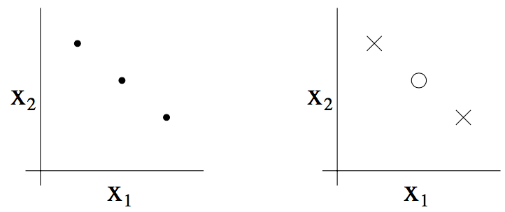
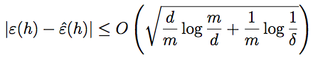
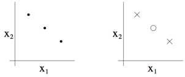

CS229
Lecture notes
翻译：CycleUser
Part V 学习理论（Learning Theory）
1偏差/方差的权衡（Bias/variance tradeoff ）
在讲线性回归的时候，我们讨论过这样的问题：拟合数据的时候，选择线性的“y = θ0 +θ1x”这样的“简单”模型，还是选择多项式的“y=θ0+θ1x+···θ5x5”这种“复杂”模型。如下图所示：

如最右侧图所示，用一个五次多项式来进行拟合，得到的并不是一个好模型。而且，这个五次多项式对于训练集中的每一个 x（例如之前文中说的居住面积）都给出了非常好的预测的 y 值（对应的就是房屋价格），我们也不能指望这个模型能够对训练集之外的点给出靠谱的预测。换句话说，用这种高次多项式来对训练集进行学习得到的模型根本不能扩展运用到其他房屋上面去。一个推测模型（hypothesis）的泛化误差（generalization error，稍后再给出正式定义）正式那些不属于训练集的样本潜在的预期偏差（expected error on examples not
necessarily in the training set）。
上面图中最左边的线性拟合和最右边的高次多项式拟合都有非常大的泛化误差。然而，这两个模型各自出的问题是很不一样的。如果 y 和 x 之间的关系不是线性的，那么即便我们有一个非常大规模的训练集，然后用来进行线性拟合，得到的线性模型都还是不能够准确捕捉到数据的结构。我们粗略地将一个模型的偏差（bias）定义为预期的泛化误差（expected generalization error），即便我们要去拟合的对象是一个非常大的甚至是无限的训练数据集。这样的话，对于上面三幅图中所展示的那个情况来看，最左边的那个线性模型就具有特别大的偏差（bias），可能是对数据欠拟合（也就是说，没有捕捉到数据所体现的结构特征）。
Apart from bias,
there’s a second component to the generalization error, consisting of the
variance of a model fitting procedure. Specifically, when fitting a 5th order
polynomial as in the rightmost figure, there is a large risk that we’re fitting
patterns in the data that happened to be present in our small, finite training
set, but that do not reflect the wider pattern of the relationship between x
and y. This could be, say, because in the training set we just happened by
chance to get a slightly more-expensive-than-average house here, and a slightly
less-expensive-than-average house there, and so on. By fitting these “spurious”
patterns in the training set, we might again obtain a model with large
generalization error. In this case, we say the model has large variance.1
1In these notes, we will not try to formalize the definitions of bias and
variance beyond this discussion. While bias and variance are straightforward to
define formally for, e.g., linear regression, there have been several proposals
for the definitions of bias and variance for classification, and there is as
yet no agreement on what is the “right” and/or the most useful formalism.
Often, there is a
tradeoff between bias and variance. If our model is too “simple” and has very
few parameters, then it may have large bias (but small variance); if it is too
“complex” and has very many parameters, then it may suffer from large variance
(but have smaller bias). In the example above, fitting a quadratic function
does better than either of the extremes of a first or a fifth order polynomial.
2 Preliminaries
In this set of
notes, we begin our foray into learning theory. Apart from being interesting
and enlightening in its own right, this discussion will also help us hone our
intuitions and derive rules of thumb about how to best apply learning
algorithms in different settings. We will also seek to answer a few questions:
First, can we make formal the bias/variance tradeoff that was just discussed?
The will also eventually lead us to talk about model selection methods, which
can, for instance, automatically decide what order polynomial to fit to a
training set. Second, in machine learning it’s really generalization error that
we care about, but most learning algorithms fit their models to the training
set. Why should doing well on the training set tell us anything about
generalization error? Specifically, can we relate error on the training set to
generalization error? Third and finally, are there conditions under which we
can actually prove that learning algorithms will work well?
We start with two simples
but very useful lemmas.
Lemma. (The union
bound). Let A1, A2, . . ., Ak be k different events (that may not be
independent). Then
P(A1 ∪···∪Ak)≤P(A1)+...+P(Ak).
In probability
theory, the union bound is usually stated as an axiom (and thus we won’t try to
prove it), but it also makes intuitive sense: The probability of any one of k
events happening is at most the sums of the probabilities of the k different
events.
Lemma. (Hoeffding inequality) Let Z1, . . . , Zm be m independent and iden- tically distributed (iid) random variables drawn from a Bernoulli(φ) distri- bution. I.e.,P(Zi =1)=φ,andP(Zi =0)=1−φ. Letφˆ=(1/m) mi=1Zi be the mean of
these random variables, and let any γ > 0 be fixed. Then
P ( | φ − φˆ | > γ ) ≤ 2 e x p ( − 2 γ 2 m )
This lemma (which
in learning theory is also called the Chernoff bound)
says that if we take φˆ—the average of m Bernoulli(φ) random variables—to be our
estimate of φ, then the probability of our being far from the true value is
small, so long as m is large. Another way of saying this is that if you have a
biased coin whose chance of landing on heads is φ, then if you toss it m times
and calculate the fraction of times that it came up heads, that will be a good
estimate of φ with high probability (if m is large).
Using just these
two lemmas, we will be able to prove some of the deepest and most important
results in learning theory.
To simplify our
exposition, let’s restrict our attention to binary classification in which the
labels are y ∈ {0, 1}. Everything we’ll say here
generalizes to other, including regression and multi-class classification, problems.
We assume we are
given a training set S = {(x(i),y(i));i = 1,...,m} of size m, where the training
examples (x(i),y(i)) are drawn iid from some probability
distribution D. For a hypothesis h, we define the training error (also called
the empirical risk or empirical error in learning theory) to be

This is just the
fraction of training examples that h misclassifies. When we want to make
explicit the dependence of εˆ(h) on the training set S, we may also write this
a εˆS(h). We also define the generalization error to be

I.e. this is the
probability that, if we now draw a new example (x,y)
from the distribution D, h will misclassify it.
Note that we have
assumed that the training data was drawn from the same distribution D with
which we’re going to evaluate our hypotheses (in the definition of
generalization error). This is sometimes also referred to as one of the PAC
assumptions.2
2PAC stands for “probably approximately correct,” which is a framework and
set of assumptions under which numerous results on learning theory were proved.
Of these, the assumption of training and testing on the same distribution, and
the assumption of the independently drawn training examples, were the most
important.
Consider the
setting of linear classification, and let hθ (x) = 1{θT x ≥ 0}. What’s a
reasonable way of fitting the parameters θ? One approach is to try to minimize
the training error, and pick

We call this
process empirical risk minimization (ERM), and the resulting hypothesis output
by the learning algorithm is hˆ = hθˆ. We think of ERM
as the most “basic” learning algorithm, and it will be this algorithm that we
focus on in these notes. (Algorithms such as logistic regression can also be
viewed as approximations to empirical risk minimization.)
In our study of
learning theory, it will be useful to abstract away from the specific
parameterization of hypotheses and from issues such as whether we’re using a
linear classifier. We define the hypothesis class H used by a learning
algorithm to be the set of all classifiers considered by it. For linear
classification, H = {hθ : hθ(x) = 1{θTx ≥ 0},θ ∈ Rn+1} is thus the set of all classifiers over X (the domain of the inputs)
where the decision boundary is linear. More broadly, if we were studying, say,
neural networks, then we could let H be the set of all classifiers
representable by some neural network architecture.
Empirical risk
minimization can now be thought of as a minimization over the class of
functions H, in which the learning algorithm picks the hypothesis:


3 The case of finite H
Let’s start by
considering a learning problem in which we have a finite hypothesis class H = {h1, . . ., hk} consisting of k
hypotheses. Thus, H is just a set of k functions mapping from X to {0, 1}, and
empirical risk minimization selects hˆ to be whichever of these k functions has the
smallest training error.
We would like to
give guarantees on the generalization error of hˆ. Our strategy for doing so will be in
two parts: First, we will show that εˆ(h) is a reliable estimate of ε(h) for
all h. Second, we will show that this implies an upper-bound on the
generalization error of hˆ.
Take any one,
fixed, hi ∈ H. Consider a Bernoulli random variable Z whose distribution is defined
as follows. We’re going to sample (x,y) ∼ D. Then, we set Z = 1{hi(x) ̸= y}. I.e.,
we’re going to draw one example, and let Z indicate whether hi misclassifies it.
Similarly, we also define Zj = 1{hi(x(j)) ̸= y(j)}. Since our
training set was drawn iid from D, Z and the Zj’s has the same
distribution.
We see that the
misclassification probability on a randomly drawn example— that is, ε(h)—is
exactly the expected value of Z (and Zj). Moreover, the training error can be
written

Thus, εˆ(hi) is exactly the
mean of the m random variables Zj that are drawn iid
from a Bernoulli distribution with mean ε(hi). Hence, we can
apply the Hoeffding inequality, and obtain

This shows that,
for our particular hi, training error will be close to
generalization error with high probability, assuming m is large. But we don’t
just want to guarantee that ε(hi) will be close to εˆ(hi) (with high
probability) for just only one particular hi. We want to prove
that this will be true for simultaneously for all h ∈ H. To do so, let Ai denote the event
that |ε(hi) − εˆ(hi)| > γ. We’ve already show that, for any particular Ai, it holds true
that P(Ai) ≤ 2exp(−2γ2m). Thus, using the union bound, we have that

If we subtract
both sides from 1, we find that

(The “¬” symbol
means “not.”) So, with probability at least 1−2k exp(−2γ2m), we have that
ε(h) will be within γ of εˆ(h) for all h ∈ H. This is called a uni-
form convergence result, because this is a bound that holds simultaneously for
all (as opposed to just one) h ∈ H.
In the discussion
above, what we did was, for particular values of m and γ, give a bound on the
probability that for some h ∈ H, |ε(h) − εˆ(h)| > γ. There are three quantities of interest here: m,
γ, and the probability of error; we can bound either one in terms of the other
two.
For instance, we
can ask the following question: Given γ and some δ > 0, how large must m be
before we can guarantee that with probability at least 1 − δ, training error
will be within γ of generalization error? By setting δ = 2k exp(−2γ2m) and solving for m, [you should convince yourself this is the right
thing to do!], we find that if

then with
probability at least 1 − δ, we have that |ε(h) − εˆ(h)| ≤ γ for all h ∈ H. (Equivalently, this shows that the
probability that |ε(h) − εˆ(h)| > γ for some h ∈ H is at most δ.) This bound tells us how
many training examples we need in order make a guarantee. The training set size
m that a certain method or algorithm requires in order to achieve a certain
level of performance is also called the algorithm’s sample complexity.
The key property
of the bound above is that the number of training examples needed to make this
guarantee is only logarithmic in k, the number of
hypotheses in H. This will be important later.
Similarly, we can
also hold m and δ fixed and solve for γ in the previous equation, and show
[again, convince yourself that this is right!] that with probability 1 − δ, we
have that for all h ∈ H,


Now, let’s assume
that uniform convergence holds, i.e., that |ε(h)−εˆ(h)| ≤ γ for all h ∈ H. What can we prove about the
generalization of our learning algorithm that picked hˆ = arg
minh∈H εˆ(h)?
Define h∗ = arg minh∈H ε(h) to be the best possible hypothesis
in H. Note that h∗ is the best that we could possibly do given
that we are using H, so it makes sense to compare our performance to that of h∗. We have:

The first line
used the fact that | ε ( hˆ ) − εˆ ( hˆ ) | ≤ γ ( by our uniform convergence
assumption). The second used the fact that hˆ was chosen to minimize εˆ(h), and
hence εˆ(hˆ)
≤ εˆ(h) for all h, and in particular εˆ(hˆ) ≤ εˆ(h∗). The third line used the uniform convergence assumption again, to show
that εˆ(h∗) ≤ ε(h∗) + γ. So, what we’ve shown is the following: If uniform convergence
occurs, then the generalization error of hˆ is at most 2γ worse than the best
possible hypothesis in H!
Let’s put all this
together into a theorem.
Theorem. Let |H| = k, and let any m, δ be fixed. Then with probability at
least 1 − δ, we
have that

This is proved by
letting γ equal the √
term，using our previous argument that
uniform convergence occurs with probability at least 1 − δ, and then noting
that uniform convergence implies ε(h) is at most 2γ higher than ε(h∗) = minh∈H ε(h) (as we showed previously).
This also
quantifies what we were saying previously saying about the bias/variance
tradeoff in model selection. Specifically, suppose we have some hypothesis
class H, and are considering switching to some much larger hypothesis class H′ ⊇ H. If we switch to H′, then the first term minh ε(h) can only decrease
(since we’d then be taking a min over a larger set of functions). Hence, by
learning using a larger hypothesis class, our “bias” can
only decrease.
However, if k increases, then the second 2√
increase. This increase corresponds to our
“variance” increasing when we use a larger hypothesis class.
8

· term would also By holding γ and δ fixed and solving for
m like we did before, we can
also obtain the
following sample complexity bound:
Corollary. Let |H| = k, and let any δ,γ be fixed. Then for ε(hˆ) ≤
minh∈H ε(h) + 2γ to hold with probability at
least 1 − δ, it suffices

4 The case of infinite H
We have proved
some useful theorems for the case of finite hypothesis classes. But many
hypothesis classes, including any parameterized by real numbers (as in linear
classification) actually contain an infinite number of functions. Can we prove
similar results for this setting?
Let’s start by
going through something that is not the “right” argument. Better and more
general arguments exist, but this will be useful for honing our intuitions
about the domain.
Suppose we have an
H that is parameterized by d real numbers. Since we
are using a
computer to represent real numbers, and IEEE double-precision
floating point
(double’s in C) uses 64 bits to represent a floating point num-
ber,
this means that our learning algorithm, assuming we’re using double-
precision floating
point, is parameterized by 64d bits. Thus, our hypothesis
class really
consists of at most k = 264d different hypotheses. From the Corol-
lary at
the end of the previous section, we therefore find that, to guarantee
ε(hˆ) ≤ ε(h∗) + 2γ, with to hold with probability at least 1 − δ, it suffices
thatm≥O 1 log264d =O d log1 =O (d). (Theγ,δsubscriptsare
γ2 δ γ2 δ γ,δ
to indicate that
the last big-O is hiding constants that may depend on γ and δ.) Thus, the
number of training examples needed is at most linear in the parameters of the
model.
The fact that we
relied on 64-bit floating point makes this argument not entirely satisfying,
but the conclusion is nonetheless roughly correct: If what we’re going to do is
try to minimize training error, then in order to learn


9
“well” using a
hypothesis class that has d parameters, generally we’re going to need on the
order of a linear number of training examples in d.
(At this point,
it’s worth noting that these results were proved for an al- gorithm
that uses empirical risk minimization. Thus, while the linear depen- dence of sample complexity
on d does generally hold for most discriminative learning algorithms that try
to minimize training error or some approxima- tion to training error, these conclusions do not always
apply as readily to discriminative learning algorithms. Giving good theoretical
guarantees on many non-ERM learning algorithms is still an area of active
research.)
The other part of
our previous argument that’s slightly unsatisfying is that it relies on the
parameterization of H. Intuitively, this doesn’t seem like it should matter: We
had written the class of linear classifiers as hθ(x) = 1{θ0 + θ1x1 + ···θnxn ≥ 0}, with n + 1
parameters θ0,...,θn. But it could also be written hu,v(x)
= 1{(u20 − v02) + (u21 − v12)x1 + ···(u2n − vn2)xn ≥ 0} with 2n + 2 parameters ui, vi. Yet, both of
these are just defining the same H: The set of linear classifiers in n
dimensions.
To derive a more
satisfying argument, let’s define a few more things.
Given a set S = {x(i), . . . , x(d)} (no relation to the training set) of
points x(i) ∈ X, we say that H shatters S if H can realize any labeling on S. I.e., if
for any set of labels {y(1), . . . , y(d)}, there exists
some h ∈ H so that h(x(i)) = y(i) for all i =
1,...d.
Given a hypothesis
class H, we then define its Vapnik-Chervonenkis
dimension, written VC(H), to be the size of the largest set that is shattered
by H. (If H can shatter arbitrarily large sets, then VC(H) = ∞.)
For instance,
consider the following set of three points:

Can the set H of
linear classifiers in two dimensions (h(x) = 1{θ0 +θ1x1 + θ2x2 ≥ 0}) can shatter
the set above? The answer is yes. Specifically, we see that, for any of the
eight possible labelings of these points, we can find
a linear classifier that obtains “zero training error” on them:

Moreover, it is
possible to show that there is no set of 4 points that this hypothesis class
can shatter. Thus, the largest set that H can shatter is of size 3, and hence
VC(H) = 3.
Note that the VC
dimension of H here is 3 even though there may be sets of size 3 that it cannot
shatter. For instance, if we had a set of three points lying in a straight line
(left figure), then there is no way to find a linear separator for the labeling
of the three points shown below (right figure):

In order words,
under the definition of the VC dimension, in order to prove that VC(H) is at
least d, we need to show only that there’s at least one set of size d that H
can shatter.
The following
theorem, due to Vapnik, can then be shown. (This is,
many would argue, the most important theorem in all of learning theory.)
11
Theorem. Let H be
given, and let d = VC(H). Then with probability at least 1−δ, we have that for
all h∈H,

Thus, with
probability at least 1 − δ, we also have that:

In other words, if
a hypothesis class has finite VC dimension, then uniform convergence occurs as
m becomes large. As before, this allows us to give a bound on ε(h) in terms of
ε(h∗). We also have the following corollary:
Corollary. For
|ε(h) − εˆ(h)| ≤ γ to hold for all h ∈ H (and hence ε(hˆ) ≤ ε(h∗) + 2γ) with probability at least 1 − δ, it suffices that m = Oγ,δ(d).
In other words,
the number of training examples needed to learn “well” using H is linear in the
VC dimension of H. It turns out that, for “most” hypothesis classes, the VC
dimension (assuming a “reasonable” parameterization) is also roughly linear in
the number of parameters. Putting these together, we conclude that (for an
algorithm that tries to minimize training error) the number of training
examples needed is usually roughly linear in the number of parameters of H.